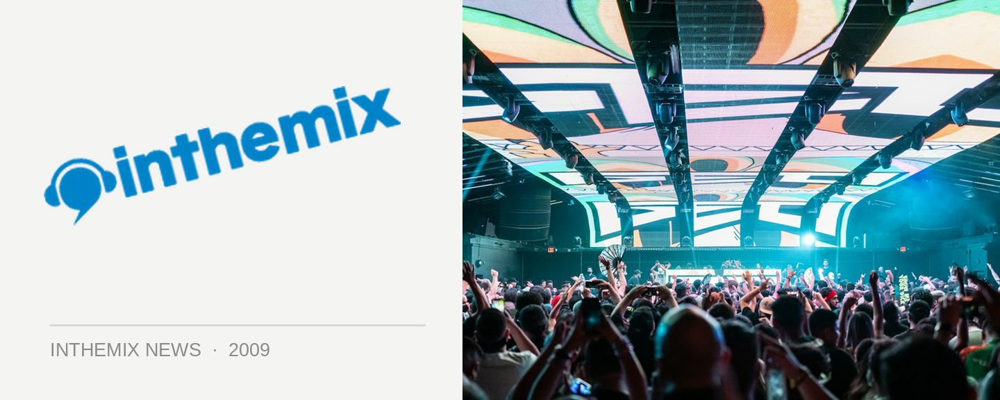

The Presets join the NY parties, release solo CD & more
Aussie golden boys The Presets have been keeping quiet since their gigs with Good Vibrations earlier this year and their subsequent sellout national tour, but the pair have a few things coming up on several different fronts. They’ll be playing a couple of cracker New Years gigs, announced late last week as part of the Field Day lineup as well a new addition to the Summafieldayze lineup, and Kim will be having a few solo adventures of his own in the leadup.
In late October Kim will be releasing a solo collection of his own work in the form of Selected Jerks 2001-2009, a double-CD affair with the first disc focusing on his own production work, while the second will feature a hefty bunch of remixes from acts like Midnight Juggernauts, Riot In Belgium, Bag Raiders and more. He’ll also be hitting the road shortly after the compilation’s release for a national DJ tour.
The Presets NY tour dates:
Friday 1st January – Field Day, Sydney
Saturday 9th January – Summafieldayze, Gold Coast
Selected Jerks 2001-2009 is out October 30th through Modular and Universal, catch Kim on the road at the following shows:
Friday 30th Oct – Neverland, Gold Coast
Saturday 31st Oct – Arcade, Adelaide
Friday 6th Nov – Villa, Perth
Thursday 12th Nov – Club4Play, Geelong
Friday 13th Nov – Sorry Grandma, Melbourne
Saturday 14th Nov – Monastery, Brisbane
Friday 20th Nov – Oxford Arts Factory